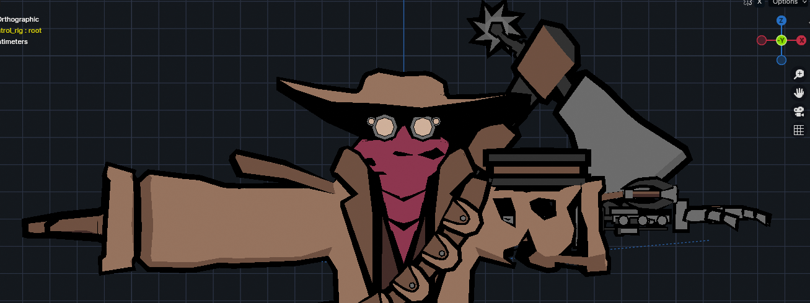
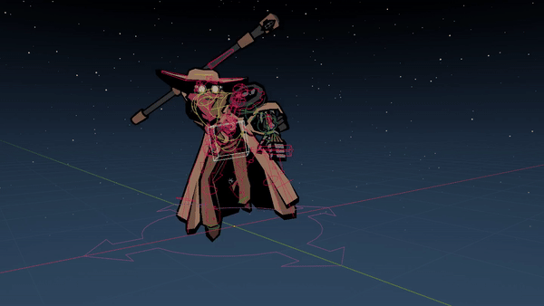
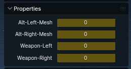

Asset Creation
I created and animated all models in Blender, for texturing I use a mixture of painting in Blender and paint.net. My model creation workflow has changed over time, but I always do poly modelling (as opposeed to sculpting) due to my preference for low poly models. I typically use a mixture of texture atlases and trim sheets depending on the models needs, they're really reusable and use very little space as I typically use smaller resolutions. Another advantage to why I use them is they reduce drawcalls, by having reusable textures, more assets can reuse them and thus use the same material.
Animation
When creating rigs for assets I'll sometimes create a control rig depending on their complexity, for example the main player character. To do this I use the Rigify addon for blender to automate their creation from a meta rig I create, this helps set up certain constraints such as basic IK/FK for arms and legs with some other nice quality of life, like choosing the shapes of widgets. Rigify is also incredibly useful to me for quickly adjusting control rigs, and it can even maintain constraints set up on the metarig.
My process for animating the control rig typically consists of laying out key poses, then adjusting their interpolation via the graph editor or setting interpolation types. Some quirks to animating in Blender don't always translate 1:1 in Unity so I'll often have to do another pass on the animation after seeing how it interacts in-engine. When animating simple characters without control rigs the process is pretty much the same but typically easier due to their simplistic nature.
Some assets don't use gamerigs due to being simpler and only have one rig. The drone enemy is very simple but uses IK to control the arm, similarly the robot uses IK for its legs. In engine however, the robot's animator has a mask allowing it to control anything but the legs as they are controlled via IK scripts instead.
Exporting to Engine
Exporting animations from Blender to Unity can be a hassle for control rigs, as simply exporting the control rig won't carry over constraints and will lose a lot of fidelity. To achieve much better exports I opted to use game rigs, and to help me with it I use the addon Game Rig Tools to automate the creation of gamerigs. It's fantastic at streamlining the process, for example when if I need to add a new bone to a character I simply need to set the metarig up correctly with the right bone type, regenerate the control rig, then regenerate the game rig with a couple of clicks. It does mean I need to bake my animations to the game rig, but it also supports this and allows me to select what to bake and directly push them to the NLA track for exporting. Once exported inside Unity I typically find very few issues, but a common one is keyframe interpolation doesn't carry over perfectly, this only really affects constant interpolation and if I really require it I can simply set it manually inside the imported Unity animation clip.
Weapons System
For the main player character to hold a variety of weapons in either hand I came up with 2 systems to try so that I could animate them in Blender and export them successfully. The first was to provide each weapon its own bone, and have snapping points on the player which any of these bones could snap to by having their respective drivers adjusted. This system worked well except when in engine I had to determine a way to hide the weapons when in their resting positions. Issues then occured when interpolating between animations as despite the weapon snapping instantly, animations state interpolation could make that not so.
Instead I implemented the second method, which is to drive weapon snapping via scripts and snap them the Objects instead inside Blender (which are not exported with the character). I then set the equipped weapon per slot in the characters' bone properties rather than the weapons.

This system works easiest for me for a number of reasons, one of which being write defaults doesn't work fully due to how keyframes are baked by Game Rig Tools.
A hurdle I had to overcome to get it working was that custom properties and bone properties exported by Blender are not compatible with Unity.
To solve this I have data bones underneath the character whose axis are constrained by the properties they represent, within Unity I then read their rounded positions to interpret the properties value at a given time.